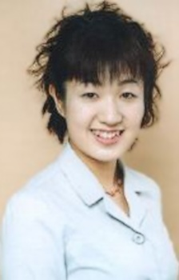

Emi Motoi is a Japanese voice actress. She tends to portary young girls. Her well known voices are in Cardcaptor Sakura and Code Geass.
- Gender: Female
- Birthday: October 11
- Hometown: Kanagawa, Japan

| |
Emi Motoi is a Japanese voice actress. She tends to portary young girls. Her well known voices are in Cardcaptor Sakura and Code Geass.
|
 |
|---|
 |
Naoko Yanagisawa |
|
Naoko Yanagisawa is one of Sakura Kinomoto's elementary school classmates and friends. She is on the cheerleading squad with Sakura. Naoko loves to read fantasy and ghost stories. She finds mysterious situations fascinating. |